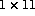

Given,
A = (/2,3,7,4,9,1,5,5,0,5,5/)
then GRADE_DOWN(A) is the 2D (  ) array:
(/5,3,7,8,10,11,4,2,1,6,9/)
and
GRADE_UP(A,DIM=1) is the 1D array:
(/9,6,1,2,4,7,8,10,11,3,5/)
Note how the multiple values of 5 are sorted.
The result when not using DIM= has shape
(/ SIZE(SHAPE(A)),PRODUCT(SHAPE(A))/)
Otherwise the shape is the same as A.
For more information, click here